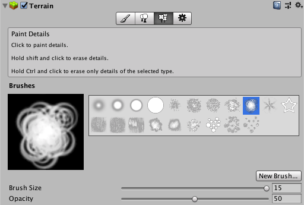
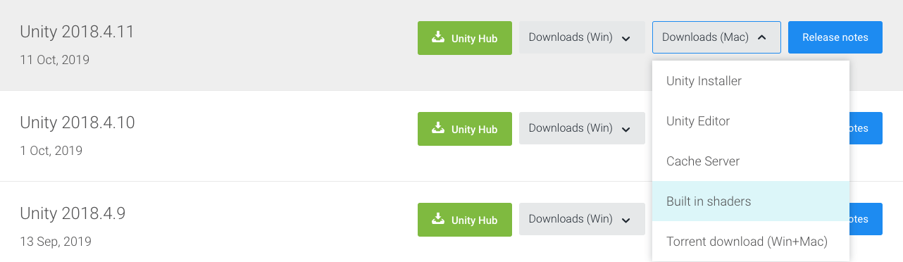

Terrain 地形編輯器
Unity 開發者相當熟悉的功能
其中 Terrain Details 功能讓開發者能夠使用筆刷工具種植花花草草

但由於預設的 Terrain Details 只提供簡單的風模擬
使得玩家與場景之間的互動相當生硬
而這次的主要目的就是改善這個問題
在不需要進行大改動的前提下
加入可互動 Terrain Details 功能
並改善風模擬的搖擺規律
製作可互動的 Terrain Details 讓場景動起來
要製作可互動的 Terrain Details 概念上不難理解
最主要的 Know-how 是需要找到 WavingGrassBillboard 這個內建 Shader
這個 Shader 主要負責繪製 Terrain Details Billboard
開發者透過 Terrain 種植的 Terrain Details 都會透過這個 Shader 進行繪製
如何找到 BillboardWavingDoublePass Shader?
1. 查看 Unity 版本
2. 至官網下載對應版本的 Build in shaders

Grass Bending
1. 定義 _BendingData 儲存互動物位置及互動半徑
2. 計算頂點世界位置
3. 計算頂點世界位置與互動物位置的距離
4. 計算互動強度
5. 計算互動方向
6. 改變頂點位置
Wind Simulation
1. 定義 _WindTex 儲存風強度
2. 計算頂點世界位置
3. 使用頂點世界位置對 _WindTex 進行取樣取得風強度
4. 調整風強度
5. 改變頂點位置
Grass Bending
void updateGrassBending(inout appdata_full v)
{
float bendingRadius = _BendingData.w;
float3 bendingWorldPos = _BendingData.xyz;
float3 vertexWorldPos = mul(unity_ObjectToWorld, v.vertex);
float dist = distance(vertexWorldPos, bendingWorldPos);
float bendingStrength = 1 - saturate(dist / bendingRadius);
float3 bendingDir = normalize(vertexWorldPos - bendingWorldPos);
bendingDir *= bendingStrength * _BendingStrength * v.tangent.y;
v.vertex.xz += bendingDir.xz;
}Wind Simulation
void updateWind(inout appdata_full v)
{
float4 worldPos = mul(unity_ObjectToWorld, v.vertex);
float windStrength = tex2Dlod(_WindTex, float4(worldPos.xz / _WindSize + float2(_Time.x * _WindSpeed + v.tangent.y * 0.01, 0), 0, 0)).r;
windStrength -= 0.5;
windStrength *= v.tangent.y * _WindStrength;
v.vertex.xy += float2(windStrength, windStrength * _GrassCurve);
}Vertex Shader
v2f vert(appdata_full v)
{
v2f o;
UNITY_SETUP_INSTANCE_ID(v);
UNITY_INITIALIZE_VERTEX_OUTPUT_STEREO(o);
updateGrassBending(v);
updateWind(v);
TerrainBillboardGrass (v.vertex, v.tangent.xy);
float waveAmount = v.tangent.y;
o.color = TerrainWaveGrass (v.vertex, waveAmount, v.color);
o.pos = UnityObjectToClipPos(v.vertex);
o.texcoord = v.texcoord;
return o;
}